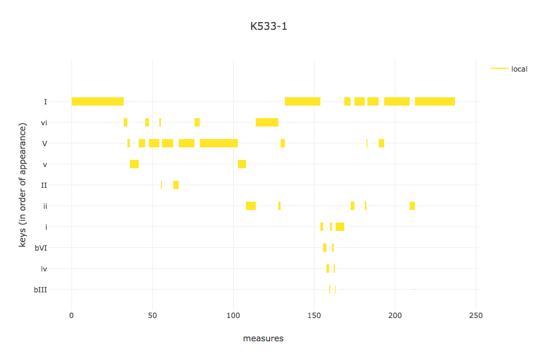
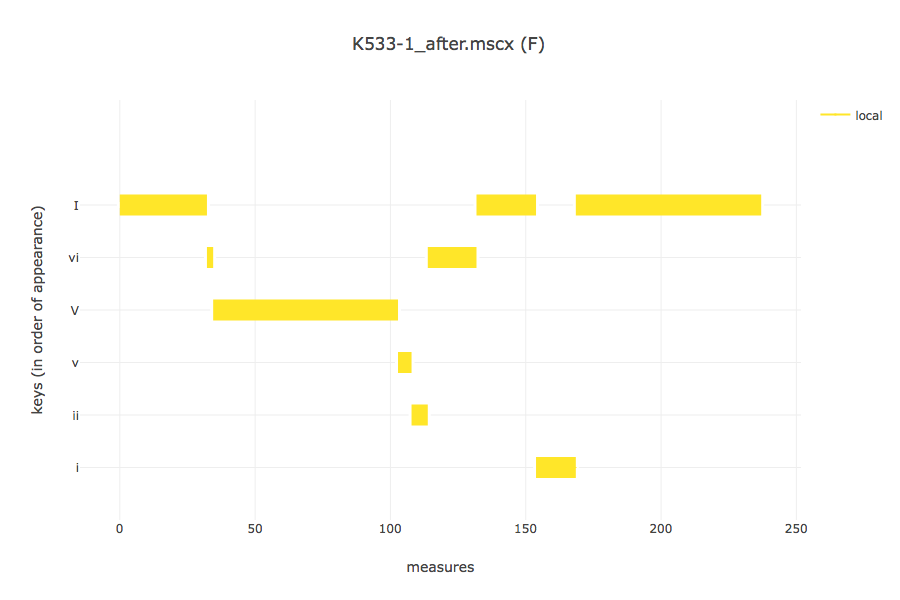
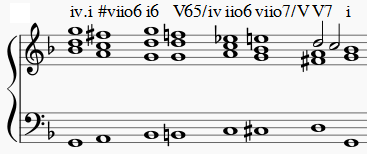
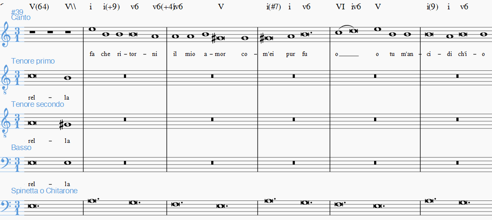
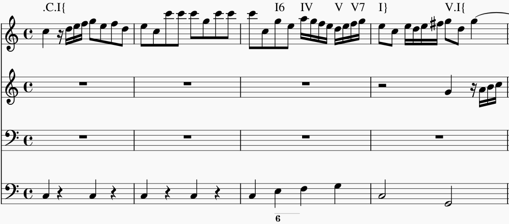
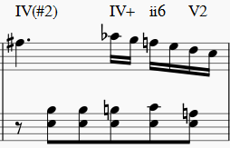
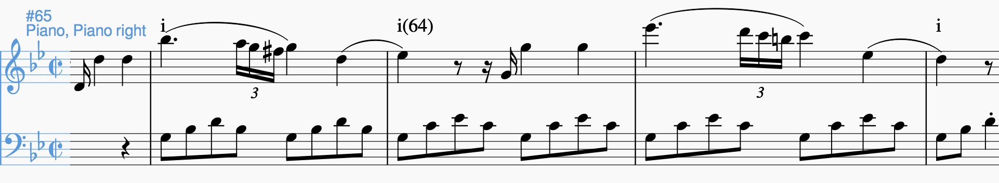
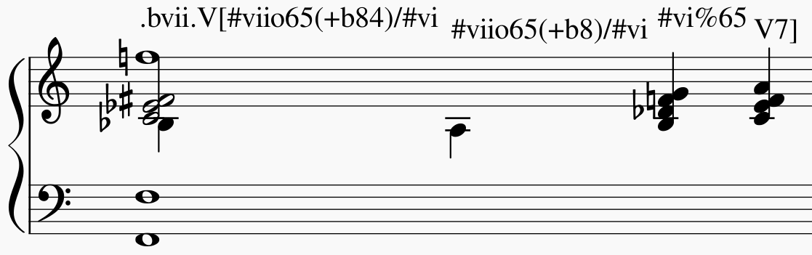

Annotation Reference¶
Quickstart¶
This section gives a brief overview of the DCML harmony annotation standard and how to get started. Each feature links to the detailed reference below and to the relevant tutorial pages.
Tooling setup¶
Install MuseScore 3.6.2 (not MuseScore 4 — see the note below).
Open a score (uncompressed
.mscxformat) and click on the note where you want to place the first label.Go to
Add -> Text -> Roman Numeral Analysis(or assign a shortcut such asCtrl+R). See the tutorial for cursor navigation ([SPACE],[TAB],Ctrl+3/4/...).Set up Git for version control of your annotation files. Follow the score edition guidelines for score preparation.
Feature overview¶
Global and local key —
The first label always starts with the global key (e.g. Ab.I, f#.i).
Subsequent modulations are indicated as Roman numerals relative to the global
key, followed by a dot (e.g. V.I).
See Indication of key and Changing the local key.
Roman numerals —
Upper case = major triad, lower case = minor triad. Altered roots are
prefixed with b or # (e.g. bVI, #iv). Inversions and
chord types are appended (e.g. V65, viio7, III+6).
See Roman numerals and The first label.
Applied chords and relative keys —
A slash indicates that a chord relates to a key other than the current
local key, e.g. V65/IV. Extended slash notation can mark fleeting
tonicizations over several chords (e.g. iio65/vi V7/vi i/vi).
See Relative key and Changing the local key.
Suspensions, retardations, and chord-tone changes —
Annotated as Arabic digits in parentheses after the Roman numeral:
V(4) for a 4–3 suspension, V(64) for the cadential six-four.
Digits refer to intervals above the root, not figured bass.
See Suspensions and retardations and Level of detail.
Added and missing notes —
Added notes use + (e.g. ii6(+4) for a pedal tone), missing notes
use - (e.g. I(-3) for an empty fifth).
See Added and missing notes.
Phrase annotations and cadence labels —
Phrases are delimited with { and }, cadences are marked on the
ultima with a pipe and label: i|PAC}.
See Phrase annotations and cadence labels and The first phrase.
Pedal points —
Bracketed passages over a sustained bass note: I[I IV64 V7 I].
See Pedal points (Organ points) and Some more features.
Augmented sixth chords —
Special symbols It6, Ger6, Fr6 for the three standard forms.
See Augmented sixth chords.
Ambiguity and unisono —
Two interpretations are separated by a dash (viio6-V43). Unaccompanied
passages use @none when no harmony can be inferred.
See Ambiguity.
Introduction¶
Thank you for your interest in the DCML harmony annotation standard. Harmonic analysis is a notoriously complex task, as of now very difficult to teach to a computer. Therefore, we need to rely on hand-annotated data when analyzing the development of tonal harmony over the last five centuries with quantitative methods. With this goal in mind, we have devised an annotation standard for encoding harmonic analyses in a machine-readable format. This document serves as a reference for looking up aspects of its syntax together with some examples. If you want to learn how DCML annotators use MuseScore to enter harmonic analysis directly into digital scores, please refer to our annotation tutorial.
What is it?¶
In its essence, the standard consists of two things: A set of rules for constructing chord labels in a standardized way and this reference on how to apply these labels to music and how to interpret those that you encounter. In this context, we use the words ‘symbols’, ‘chord symbols’, ‘labels’, ‘expressions’, and ‘annotations’ interchangeably. Generally you encounter them in two different contexts: Either when you open a digital score in the XML format of the open-source notation software MuseScore 3.6.2, or in the form of an annotation table, that is a table in which each row represents a label and each column one of its properties such as position in the score, the key it occurs in, the chord tones it represents, and its different features. This reference is mainly concerned with explaining what these different properties are.
Why not MuseScore 4?
The DCML standard relies on MuseScore 3.6.2, not MuseScore 4. The MuseScore 4
rewrite has dropped several features indispensable for power users —
possibly motivated by commercial interests that do not serve the open-source
community. The single most critical issue for us is the elimination of the
ability to store MuseScore files as individual .mscx files (rather than
an entire uncompressed folder). This breaks our Git-based version-control
workflow and the tooling built on top of it. As long as this remains
unresolved, we cannot adopt MuseScore 4. The issue is tracked at
musescore/MuseScore#15995.
About this reference¶
Everyone is free to use the proposed standard for encoding harmonic analyses in ways, contexts, and environments of their free choice. The goal of this reference is not to tell anyone how they should analyse harmony. Instead, its purpose is to clarify what the different parts of the syntax are supposed to express in order to allow analysts to communicate their musical interpretations in a precise and consistent manner. The examples and recommendations are supposed to be guidelines that have as a goal to make annotations from different users comparable and interoperable.
General principles¶
The following principles are essential for producing correct annotations:
Consistency is the annotation standard’s highest maxim: While different annotators would interpret the same music differently, it is important that the same annotator interprets the same music identically.
Major keys are indicated by uppercase, minor keys by lowercase letters.
The information about a harmony is expressed in a fixed order (syntax) and orthographical errors can be automatically detected.
Chord symbols (i.e. Roman numerals) are attached to the moment in the score where the respective harmony begins. They are valid until the next symbol; identical symbols are never repeated consecutively (see Immediate repetition of identical labels for exceptions).
Symbols are typically attached to the lower system of the score, even if it contains only rests, at the precise position where the harmony occurs.
Arabic numbers indicating inversions or chord tone changes always appear in descending order (e.g.
65or9#74).We annotate non-chord tones such as suspensions, retardations, and additions, but not ornaments (neighbour notes, passing notes, embellishments). See Level of detail in the tutorial for guidance.
Before annotating, decide on the harmonic pace for the piece and maintain it consistently.
The annotations always need to represent a consistent reading, also in the case of repetitions, first and second endings, dal segnos, etc.
DCML labels are entered in MuseScore 3’s Roman Numeral Analysis layer (
Add -> Text -> Roman Numeral Analysis), not in the Harmony layer, StaffText/SystemText, or Lyrics. See the tutorial for instructions on placing and navigating the annotation cursor.
Display of parentheses
MuseScore’s Roman Numeral Analysis layer does not render our
parenthesis notation correctly —
for example, V(9#74) may display in an unexpected way. This is purely
cosmetic and inconsequential for encoding: the underlying data is stored
exactly as you type it, which is all that matters for our purposes.
Note
Depending on the source of the notation file you receive for annotation, it may be advisable to have a scan of the Urtext open for tacit correction of the score. At least the bar numbers must be 100% correct. Make sure that upbeat measures are counted by MuseScore as measure 0. For detailed guidance on score preparation and formatting, see our score edition guidelines.
The syntax¶
Every chord symbol must have at least one compulsory Roman numeral and may start with an indication of key, followed by a separating dot. Such an indication sets the context for the attached Roman numeral and for all subsequent symbols up to the next indication of key. Phrase annotations represent a separate standard. Therefore they can stand alone, without a chord label, or at the very end of one.
Indication of key¶
The first symbol written in a score always starts with the absolute indication of the entire piece’s tonality.
Simply type the tonic’s note name {A/a,B/b,C/c,D/d,E/e,F/f,G/g(#/b)} followed by a dot. Examples:
f#.ifor the first harmony of a piece in F sharp minor;Ab.Ifor the first harmony of a piece in A flat major; both pieces beginning with the tonic harmony.All other indications of key (i.e. ‘local keys’) are entered as Roman numerals relative to that.
Example 1: As soon as a piece in C major modulates to G major, you can indicate the new key by typing
V.Iover the harmony of G major. All subsequent Roman numerals up to the next indication of key relate to the new key of G major.There is a way of annotating secondary dominants (see Relative key); however, if you find a
V/vichord and the music then stays in the key ofvifor a longer time (cf. next paragraph), you can writevi.Vright away. Every followingisymbol designates the new tonic.To highlight a brief, non-substantial modulation (a fleeting tonicization), we prefer continuing with the slash notation over several chords rather than changing the local key. For example,
iio65/vi V7/vi i/vikeeps the passage visually grouped as a fleeting modulation context, and the cadential movement reads asV7 - i(the finali/viis equivalent tovibut better conveys the tonicization). Use a change of local key (vi.) only when the music genuinely stays in the new key.You can also modulate to a relative key such as
vi/III: In a global minor context, this would correspond to the global tonic, but expressed as the minor relativeviof the global-relativeIII. Such relative-key modulations normally occur adjacent to (before or after) a modulation to the local key to which they are relative.
Example¶
I6 ii65/V V7/V V and I6 V.ii65 V7 I (from the Schumann example
below), in general, express the same chords but a preference has to be
given either to the first version - i.e., with applied chords - or
to the second - i.e., with change of local key. In principle, it is
an objective of your analyses to include a bigger picture of a piece’s
tonality through exactly this kind of choices. This means that upon
making such a choice, you need to include the broader context:
If the example passage is a mere tonicization of
Vfollowed by a return to the original tonic, that is a case for the version with applied chords because the local key stays the same. This is the case in the given example. (NBI/Vhas exactly the same meaning asVand, at the end of an authentic cadence should should be the preferred solution.)If, on the other hand, the music continues in the key of V, the second option should be chosen. The general rule is that, in such a modulation, the change of local key should be annotated
at the latest when a chord cannot be interpreted in the old, but in the new key (i.e., where the A# occurs);
as early as consistently possible; so, depending on the context you could even write
V.IV6 ii65 V7 I.
Note
Note that the key indications of applied chords always relate to the
local key (see the following section). So, if the Schumann example
below was not in E major but in A major instead, the same harmonic
progression would be standing in the key of V:
V.I6 ii65/V V7/V I(4)/V with the applied notation
remaining unchanged (/V) because it is relative to the local
key; whereas the change of local key would indicate the
absolute key instead: V.I6 II.ii65 V7 I(4)
Warning
Whenever the local key is not the global tonic (I or i), the key
indicated by the slash notation (/) will differ from the key indicated
by a modulation dot (.). Slash notation is relative to the local key,
whereas the modulation key is relative to the global key. For example,
in a passage where the local key is V, writing V7/IV refers to the
dominant seventh of the fourth degree of the local key — which is the
global tonic — while a modulation I.V7 would refer to something
entirely different. Always keep this distinction in mind.
Approriate annotation |
Unappropriate annotation |
|---|---|
mm. 4-5 from Schumann’s “Wehmut”, Liederkreis op. 39/9 |
|
{kind=link}
{kind=link}
The rationale behind this logic can be seen in these automated key analyses of two different annotations of the same piece:
With too many changes of local key |
After correction to relative keys |
|---|---|
 |
 |
Gantt chart showing the local keys in the first movement of Mozart’s K. 533 |
|
Relative key¶
If a symbol relates to a different key than the one you are in, you can
indicate the relative key using a slash /. Most prominently this is
the case for secondary dominants such as V65/IV. The relative key is
indicated as relative to the local key and does not change the local
key.
Example: iv.i #viio6 i6 V65/iv iv viio7/V V7 i designates a cadence
in the key of iv (here: G minor) because of the initial indication of
key. Note that
the relative keys
iv(C minor) andV(D major) relate to the local keyivand not to the global (tonic) key (here: D minor);viio7/Vis not spelled#viio7/Valthough the bass is altered. The reason is that it is the natural 7th scale degree in the key ofV(D major). B flat, of course, is not natural in D major but is clearly annotated through the choice ofviio7rather thanvii%7;combining relative key with a modulation can be counterintuitive because relative keys relate to the local key, whereas key indications used for modulation always relate to the global key. To avoid confusion, don’t use relative key annotation if a modulation to that same relative key follows.

Relative keys of relative keys can be annotated, for example the
dominant-seventh harmony of the dominant key of the key of scale degree v: viio/V/v.
Common mistake
Since the root of viio/V has an accidental, novice annotators are
often tempted to write #viio/V. This is incorrect because the leading
tone is scale degree 7 (not #7) in major. These are all correct:
I.viio/V, i.viio/V, I.#viio/v, i.#viio/v.
Roman numerals¶
The smallest possible symbols consist of a single Roman numeral. They
stand for a major (I, II, III, IV, V, VI, VII) or minor
(i, ii, iii, iv, v, vi, vii) triad in root position. All other
chords — those which are not a major or minor root-position triad on one
of the key’s natural degrees — need additional symbols. For altered
scale degrees, prefix the numeral with b or #, e.g. bVI for
an Ab major chord in the context of C major, or #vi for an A minor
chord in the context of C minor.
Note
Dorian and phrygian modes are annotated as minor keys; lydian and
mixolydian as major. The root distances of iii III vi VI vii VII
from the tonic are major intervals in major keys and minor intervals
in minor keys. See The first label in
the tutorial for details on modes.
Note
You always indicate the chord type before the inversion.
Triads¶
Root |
Type |
Inversions |
Chord type |
Examples |
|---|---|---|---|---|
RN |
<NA> |
<NA>, 6, 64 |
Major triad |
|
rn |
<NA> |
<NA>, 6, 64 |
Minor triad |
|
rn |
o |
<NA>, 6, 64 |
Diminished triad |
|
RN |
+ |
<NA>, 6, 64 |
Augmented triad |
|
Tetrads¶
Every seventh chord is distinguished by its type and one of the inversions
7 (root position), 65, 43, or 2.
Mnemonic Hook
Arabic numbers always occur in descending order.
Root |
Type |
Inversions |
Chord type |
Examples |
|---|---|---|---|---|
RN |
<NA> |
7, 65, 43, 2 |
Dominant seventh |
|
rn |
<NA> |
7, 65, 43, 2 |
Minor seventh |
|
rn |
o |
7, 65, 43, 2 |
Diminished seventh |
|
RN |
+ |
7, 65, 43, 2 |
Augmented minor seventh |
|
rn |
% |
7, 65, 43, 2 |
Half-diminished seventh |
|
RN |
M |
7, 65, 43, 2 |
Major seventh |
|
rn |
M |
7, 65, 43, 2 |
Minor major seventh |
|
RN |
+M |
7, 65, 43, 2 |
Augmented major seventh |
|
Note
The inversion 42 is accepted as equivalent to 2 but 2 is the
canonical form and should be preferred.
Note
While a dominant seventh chord theoretically can appear on degrees other than
V (e.g. VII7 in a falling fifths progression), when the respective tonic
follows, it should be annotated as a secondary dominant instead (e.g.
V7/III). However, there are cases where the same sonority occurs as
IV7 or IV65 in a minor key, which is not notated as a dominant.
Augmented sixth chords¶
The standard provides special symbols for the three augmented sixth chords:
Symbol |
Name |
Root |
Equivalent |
|---|---|---|---|
|
Italian sixth |
vii/V |
|
|
German sixth |
vii/V |
|
|
French sixth |
V/V |
|
The forms with their standard figured bass (It6, Ger6/Ger65,
Fr6/Fr43) all express the chord in its standard position (with scale
degree b6 in the bass) and are therefore equivalent. Other figured-bass
values indicate inversions: e.g. Ger7 has #4 in the bass, and Fr7
has scale degree 2 in the bass. Since It6 is a triad, It (without
figured bass) translates to its root position viio(b3)/V.
Note
In older versions of the standard, annotations were entered in MuseScore’s
Harmony layer rather than the Roman numeral layer. In that context, a leading
dot was required to prevent MuseScore from interpreting note names as chord
symbols (e.g. .Ger instead of Ger6). This leading dot is
deprecated and should no longer be used.
Suspensions and retardations¶
Suspensions, retardations, and other chord tone changes are annotated as
Arabic numbers within round parentheses () following the Roman numeral,
form, and inversion. The numbers designate the note’s interval to the root.
This is independent of the chord’s inversion: the suspension (4) means the
same thing in V(4), V6(4), V65(4), V43(4), and V2(4)
(in two of them, the suspension is in the bass).
To indicate the resolution, write the sounding chord without the change,
e.g. V(4) V7 or V65(4) V65.
Note
The intervals designated by the Arabic numbers in parentheses are diatonic
and depend on the chord’s position in the scale and the scale itself.
For example, iv(4) translates to F B C in a C major context but to
F Bb C in a C minor context. Use b or # to alter:
iv(b4) in C major yields F Bb C.
Replacement from above (suspensions)¶
The digits 2, 4, 6 designate the upper neighbours of chord tones
1 (root), 3 (third), 5 (fifth) respectively. The replaced chord
tone is not present:
(2): replaces the root(4): replaces the third(6): replaces the fifth
Cadential six-four
The cadential six-four chord is written as V(64) to distinguish it from
a passing I64.
Replacement from below (retardations)¶
A retardation resolves upward. The digit 7 designates replacement of the
root from below:
(7): retardation of the root (resolution goes upwards)(#2): retardation of the third from below(#4): retardation of the fifth from below(#6): retardation of the seventh from below
Direction markers¶
When a digit has an accidental, the direction of replacement is inferred by default:
bbefore a digit implies suspension (replacement from above)#before a digit implies retardation (replacement from below)
Two explicit direction markers can override these defaults:
v(from above): forces the digit to replace the chord tone below it. Needed for raised suspensions, e.g.v#2= sharped upper neighbour replacing the root.^(from below): forces the digit to replace the chord tone above it. Needed for unraised retardations, e.g.^2= diatonic 2 replacing the third.
The complete set of replacement combinations:
From above (replacing
1,3,5):2,b2,v#2,4,b4,v#4,6,b6,v#6From below (replacing
3,5,7):^2,^b2,#2,^4,^b4,#4,^6,^b6,#6
Note
Remember that the accidentals b and # depend on the local major or
(natural) minor scale.
Replacement of octave doublings¶
The digits 9, 11, 13 are used when the chord tone is present but
replaced in one of the upper octaves:
(9): replaces an octave doubling of the root (root present); contrast with(2)where the root is not present(11): replaces an octave doubling of the third (third present, often in a lower voice or in the bass)(13): replaces an octave doubling of the fifth (fifth present)
For example, the “Chopin chord” (dominant seventh add 13) is expressed
as V7(13) to clarify that the fifth is present and the added note is
(at least) a ninth apart. The distinction matters for added notes too:
V7(+6) (dissonance is a second) vs. V7(+13) (dissonance is a ninth).
Ninth chords¶
Dominant ninth chords illustrate the interplay of these conventions:
V7(9),V7(b9),V7(v#9): ninth replaces an octave doubling of the rootV7(^9),V7(^b9),V7(#9): ninth replaces an octave doubling of the thirdV7(+9),V7(+b9),V7(+#9): ninth is an added note
Replacement of the root by its lower neighbour¶
Following the above logic, replacement of the lowest root (1) in the chord
should be expressed through 0 or #0 (leading tone in a minor scale).
However, for convenience, 7 or #7 are commonly used instead (which
logically express replacement of an octave doubling of the root). Therefore
0 and 7 are equivalent in nearly all cases. The exception is
root-position chords, where the root is in the bass: Here, 0 is required
to differentiate from replacement of an octave doubling (7).
Multiple simultaneous changes¶
If several changes are sounding at the same time, annotate all of them
within the same parenthesis, always in descending order, e.g.
V(64), V(42). A cadenza doppia could look like
V7 V(64) V(4) V followed by I or i.
Attention
Designating suspensions or retardations as intervals above the root will be
counterintuitive if you are used to thinking in figured bass. For example,
a falling fauxbourdon ii6 I6 viio6 with 7-6 suspensions has to be written
as ii6(2) ii6 I6(2) I6 viio6(2) viio6. Note that you use (2) and not
(9) because the root is not present. A Classical ending with retardation
looks like i(9#74) i, and not i(#742) i or i(24#7) i.
Added and missing notes¶
Note
We don’t annotate neighbour notes, passing notes, or embellishments.
A typical additional note is a pedal note appearing in a voice other than the
bass. Added notes are annotated like chord tone changes but preceded by +:
the digit indicates the interval from the root.
Example: Imagine a C major context and a pedal on G in a middle voice. The
other voices do the progression I viio6 I6 ii6 I64 IV6 Ger6 V. Some
harmonies already contain the G (I, I6, I64, V), one harmony
supports an added G (viio6 with G is V43), and the rest neither support
G nor can it be interpreted as a suspension. Correct annotation:
I V43 I6 ii6(+4) I64 IV6(+2) Ger6(+7) V.
In analogy, - indicates that a given chord tone is missing and not
implied by the music. This symbol is used rarely because in most cases the
missing note (the fifth in particular) is considered as implied. Examples:
pronounced empty fifths I(-3), unclear third quality I(-3)-i(-3),
or missing root in two-voice counterpoint IV(-1).

Monteverdi, Lamento della ninfa: Distinguishing added notes from embellishments and suspensions (mm. 40–44).¶
Phrase annotations and cadence labels¶
Phrase annotations¶
The DCML standard includes a non-hierarchical phrase annotation using
curly brackets {}. They may stand alone or be the last character of a
chord label. Phrase annotations are always the label’s last part.
{: beginning of a phrase}: structural phrase ending (typically the cadence’s ultima)}{: phrase interlocking
The closing bracket marks the structural ending; everything between } and
the next { is still part of the same phrase (annexe, codetta, transition).
Full phrase lengths are therefore calculated from { to {.
Note
The backslash \\ is kept for backward compatibility with older versions
of the standard where it designated a phrase ending. It has been superseded
by the curly-bracket syntax.

Corelli: Sonata da chiesa op. 1/7, I, mm. 1–4¶
Cadence labels¶
Cadences are marked on the ultima with one of the following labels,
separated from the chord label by a pipe |:
Label |
Cadence type |
Usage |
|---|---|---|
PAC |
Perfect authentic cadence |
Bass and upper voice closing on ^1 |
IAC |
Imperfect authentic cadence |
Bass or upper voice not closing on ^1 |
HC |
Half cadence |
Closing on V |
DC |
Deceptive cadence |
Ultima not a tonic chord |
EC |
Evaded cadence |
Cadential goal is cut off from the previous progression and groups forward |
PC |
Plagal cadence |
Cadential ending with ^4–^1 in the bass |
Note
The PC label is accepted but should be used with caution. It remains
debated for which repertoires plagal cadences constitute an appropriate
analytical category. When in doubt, consult your reviewer.
If the ultima is suspended, the cadence label marks the moment of its
completion, whereas the structural phrase ending } marks its structural
position. When cadence label and phrase ending co-occur, } goes last:
e.g. i|PAC}. A cadence label can occur without a harmony label
(e.g. |EC) but this is rare.
Cadence frequency
The DCML guidelines require writing more cadence labels than most theorists naturally would. Following a schema-theoretic approach, if a cadential schema is repeated in the same or a similar way, the cadence label needs to be repeated as well, even if from a formal perspective only one instance would be considered the “real” cadence.
Pedal points (Organ points)¶
If several harmonies appear over the same bass note, the start of the
pedal point is marked by [ and the end by ]. In front of the opening
[ stands the Roman numeral corresponding to the bass note’s scale degree,
immediately followed (within the same expression) by the first harmony above
the pedal note. Thus, the most common pedal points start with I[I,
i[V7/iv, or V[V. The pedal point ends at the end of the terminal
symbol’s duration, i.e. it ends with the next symbol after I] or V7].
Two criteria must both apply for using the pedal-point annotation:
It involves three or more distinct harmonic events sharing the same bass note.
At least one harmony appears of which the pedal note is not a component.
Therefore, a 5/3-6/4-5/3 contrapuntal movement (often on scale degree 1)
is generally annotated as a simple neighboring motion: I I(64) I
(the pedal-point character is implied in this expression).
Example |
Explanation |
|---|---|
 (KV 333, II, 19) |
No pedal point because the bass is a constituent of every harmony. |
 (KV 333, III, 65-8) |
This is considered a mere i i(64) i prolongation (only two distinct events). |
A rule of thumb for the harmonies above the pedal note: If the bass note is
a part of the harmony, write the inversion corresponding to the bass note;
otherwise, the inversion of the chord above. A more important rule can
override this: The harmonic progression above the organ point should be
meaningful in itself. For example, in a fauxbourdon you might highlight the
sixth chords: I[IV6 iii6 ii6 I6 viio6 I] rather than
I[IV64 iii6 ii6 I viio6 I].
Note
If you change the local key, you need to end the pedal point with the previous label and start a new one.
Ambiguity¶
If two interpretations are possible and you are unable to make a decision,
you can give both interpretations by separating them with a dash -,
e.g. viio6-V43. Use this means as a last resort only and make sure
that both interpretations are valid readings within their context, i.e.
each interpretation should be valid in line with the prior and the following
symbol. This implies that no modulation can occur within an ambiguous
expression (such as viio7/V-v.#viio7) because only one of the readings
can be correct in context with the following expression. It is possible to
give a relative key (e.g. I6-V6/IV) because both options create correct
readings.
Unisono¶
Single-voice passages generally imply harmonies which you are asked to
infer. If the information of the melody line is too sparse to be sure
whether it is implying viio6 or V43, for example, you will most
likely opt for an ambiguous annotation (see Ambiguity). You are
also free to choose one interpretation because it is more stereotypical
or because it alludes to another passage of the same piece. If no harmony
can be inferred — in particular where a composer deliberately withdraws
tonal footing — use the symbol @none.
Immediate repetition of identical labels¶
There are only rare cases where identical labels should be repeated:
If one label marks the beginning or ending of an organ point.
If a repetition is needed to allow for a consistent reading with repetitions, first and second endings, dal segnos, etc. Example:
| V |: V I :|instead of| V |: I :|
Summary of the full syntax¶
One of the longest possible expressions would be
bvii.V[#viio65(+b84)/#vi. This is purely theoretical and simply a
demonstration of order and meaning of the different syntactic components.
With concrete examples given in relation to C major:
bvii.in the context of a major key (C major) means that all following symbols relate to the minor key on the lowered 7th scale degree (Bb minor).V[designates the beginning of an organ point on the 5th scale degree (F).#viio65stands for the first inversion of a diminished seventh chord on the raised 7th scale degree.(+b84)designates an added diminished octave (added notes usually occur because of pedal tones that are not in the bass) and a (not added but) suspended fourth, withholding the third./#vimeans that this chord (the#viio65) relates to the raised 6th scale degree. Which, in Bb minor, would be G. Therefore, the root of#viio65/#viwould be F#.
Here, you can see an imaginary context, in C major, where this example could theoretically occur:
